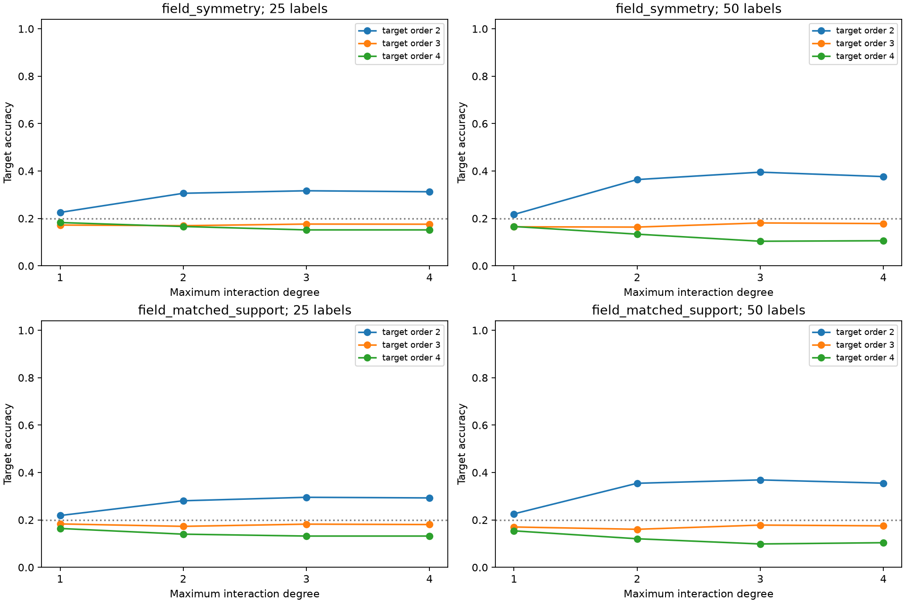

这是在普通神经读出及类别查表结果之后追加的事后探索，6912 个端点全部保留。四个源头的五分类概率形成四个因子；核同时包含截至一、二、三或四阶的所有因子交互，岭惩罚固定为 1。拟合只使用源头概率与目标支持标签，不输入目标系数、组合阶数或有限域运算。
三个对照表示为已训练源头概率、相同初始化的未训练源头概率，以及原始四个物理输入的类别独热因子；它们使用相同的目标支持/测试、交互次数和岭惩罚。未训练概率因子的信息几何与硬类别因子不同，因此直接物理因子是额外的实际参照。所有输入在源预训练中均已暴露。

| 源实验 | 标签 | 核最高阶 | 实际目标组合阶数 | 训练源因子 | 物理输入因子 | 差值 |
|---|---|---|---|---|---|---|
| field_matched_support | 25 | 1 | 2 | 21.9% | 23.8% | -1.9 pp |
| field_matched_support | 25 | 1 | 3 | 18.3% | 22.0% | -3.7 pp |
| field_matched_support | 25 | 1 | 4 | 16.4% | 19.7% | -3.3 pp |
| field_matched_support | 25 | 2 | 2 | 28.1% | 25.0% | +3.1 pp |
| field_matched_support | 25 | 2 | 3 | 17.3% | 21.9% | -4.6 pp |
| field_matched_support | 25 | 2 | 4 | 14.0% | 19.9% | -5.9 pp |
| field_matched_support | 25 | 3 | 2 | 29.6% | 25.7% | +3.8 pp |
| field_matched_support | 25 | 3 | 3 | 18.2% | 21.6% | -3.4 pp |
| field_matched_support | 25 | 3 | 4 | 13.2% | 19.5% | -6.3 pp |
| field_matched_support | 25 | 4 | 2 | 29.3% | 25.5% | +3.8 pp |
| field_matched_support | 25 | 4 | 3 | 18.1% | 21.6% | -3.5 pp |
| field_matched_support | 25 | 4 | 4 | 13.2% | 19.3% | -6.1 pp |
| field_matched_support | 50 | 1 | 2 | 22.6% | 22.8% | -0.2 pp |
| field_matched_support | 50 | 1 | 3 | 17.0% | 22.0% | -5.0 pp |
| field_matched_support | 50 | 1 | 4 | 15.4% | 19.1% | -3.7 pp |
| field_matched_support | 50 | 2 | 2 | 35.5% | 27.2% | +8.3 pp |
| field_matched_support | 50 | 2 | 3 | 16.1% | 22.4% | -6.3 pp |
| field_matched_support | 50 | 2 | 4 | 12.1% | 17.3% | -5.3 pp |
| field_matched_support | 50 | 3 | 2 | 36.9% | 28.9% | +8.0 pp |
| field_matched_support | 50 | 3 | 3 | 17.8% | 21.7% | -3.9 pp |
| field_matched_support | 50 | 3 | 4 | 9.9% | 16.8% | -6.9 pp |
| field_matched_support | 50 | 4 | 2 | 35.5% | 28.0% | +7.5 pp |
| field_matched_support | 50 | 4 | 3 | 17.5% | 21.6% | -4.1 pp |
| field_matched_support | 50 | 4 | 4 | 10.4% | 16.8% | -6.4 pp |
| field_symmetry | 25 | 1 | 2 | 22.5% | 18.3% | +4.2 pp |
| field_symmetry | 25 | 1 | 3 | 17.2% | 18.9% | -1.7 pp |
| field_symmetry | 25 | 1 | 4 | 18.3% | 15.1% | +3.2 pp |
| field_symmetry | 25 | 2 | 2 | 30.6% | 16.5% | +14.1 pp |
| field_symmetry | 25 | 2 | 3 | 16.9% | 17.4% | -0.5 pp |
| field_symmetry | 25 | 2 | 4 | 16.6% | 15.6% | +1.0 pp |
| field_symmetry | 25 | 3 | 2 | 31.7% | 16.9% | +14.8 pp |
| field_symmetry | 25 | 3 | 3 | 17.6% | 17.6% | +0.0 pp |
| field_symmetry | 25 | 3 | 4 | 15.2% | 16.0% | -0.8 pp |
| field_symmetry | 25 | 4 | 2 | 31.3% | 16.7% | +14.6 pp |
| field_symmetry | 25 | 4 | 3 | 17.6% | 17.7% | -0.2 pp |
| field_symmetry | 25 | 4 | 4 | 15.2% | 16.0% | -0.8 pp |
| field_symmetry | 50 | 1 | 2 | 21.7% | 17.8% | +3.8 pp |
| field_symmetry | 50 | 1 | 3 | 16.5% | 18.5% | -2.0 pp |
| field_symmetry | 50 | 1 | 4 | 16.6% | 17.6% | -1.0 pp |
| field_symmetry | 50 | 2 | 2 | 36.4% | 16.6% | +19.8 pp |
| field_symmetry | 50 | 2 | 3 | 16.4% | 17.2% | -0.9 pp |
| field_symmetry | 50 | 2 | 4 | 13.4% | 15.2% | -1.8 pp |
| field_symmetry | 50 | 3 | 2 | 39.5% | 16.9% | +22.6 pp |
| field_symmetry | 50 | 3 | 3 | 18.1% | 16.6% | +1.5 pp |
| field_symmetry | 50 | 3 | 4 | 10.4% | 15.5% | -5.1 pp |
| field_symmetry | 50 | 4 | 2 | 37.7% | 17.1% | +20.5 pp |
| field_symmetry | 50 | 4 | 3 | 17.8% | 17.0% | +0.8 pp |
| field_symmetry | 50 | 4 | 4 | 10.6% | 15.3% | -4.7 pp |